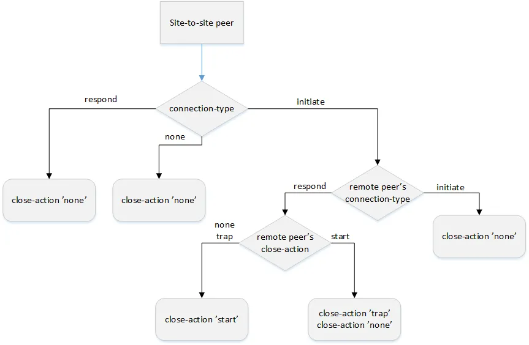

IPsec Site-to-Site VPN
IPsec Site-to-Site VPN Types
VyOS supports two types of IPsec VPN: Policy-based IPsec VPN and Route-based IPsec VPN.
Policy-based VPN
Policy-based VPN is based on static configured policies. Each policy creates individual IPSec SA. Traffic matches these SAs encrypted and directed to the remote peer.
Route-Based VPN
Route-based VPN is based on secure traffic passing over Virtual Tunnel Interfaces (VTIs). This type of IPsec VPNs allows using routing protocols.
Configuration Site-to-Site VPN
Requirements and Prerequisites for Site-to-Site VPN
Negotiated parameters that need to match
- Phase 1
IKE version
Authentication
Encryption
Hashing
PRF
Lifetime
Note
Strongswan recommends to use the same lifetime value on both peers
- Phase 2
Encryption
Hashing
PFS
Mode (tunnel or transport)
Lifetime
Note
Strongswan recommends to use the same lifetime value on both peers
Remote and Local networks in SA must be compatible on both peers
Configuration Steps for Site-to-Site VPN
The next example shows the configuration one of the router participating in IPsec VPN.
- Tunnel information:
- Phase 1:
encryption: AES256
hash: SHA256
PRF: SHA256
DH: 14
lifetime: 28800
- Phase 2:
IPsec mode: tunnel
encryption: AES256
hash: SHA256
PFS: inherited from DH Phase 1
lifetime: 3600
- If Policy based VPN is used
Remote network is 192.168.50.0/24. Local network is 192.168.10.0/24
- If Route based VPN is used
IP of the VTI interface is 10.0.0.1/30
Note
We do not recommend using policy-based vpn and route-based vpn configurations to the same peer.
1. Configure ike-group (IKE Phase 1)
set vpn ipsec ike-group IKE close-action 'start'
set vpn ipsec ike-group IKE key-exchange 'ikev1'
set vpn ipsec ike-group IKE lifetime '28800'
set vpn ipsec ike-group IKE proposal 10 dh-group '14'
set vpn ipsec ike-group IKE proposal 10 encryption 'aes256'
set vpn ipsec ike-group IKE proposal 10 hash 'sha256'
set vpn ipsec ike-group IKE proposal 10 prf 'prfsha256'
2. Configure ESP-group (IKE Phase 2)
set vpn ipsec esp-group ESP lifetime '3600'
set vpn ipsec esp-group ESP mode 'tunnel'
set vpn ipsec esp-group ESP pfs 'enable'
set vpn ipsec esp-group ESP proposal 10 encryption 'aes256'
set vpn ipsec esp-group ESP proposal 10 hash 'sha256'
3. Specify interface facing to the protected destination.
set vpn ipsec interface eth0
4. Configure PSK keys and authentication ids for this key if authentication type is PSK
set vpn ipsec authentication psk PSK-KEY id '192.168.0.2'
set vpn ipsec authentication psk PSK-KEY id '192.168.5.2'
set vpn ipsec authentication psk PSK-KEY secret 'vyos'
To set base64 secret encode plaintext password to base64 and set secret-type
echo -n "vyos" | base64
dnlvcw==
set vpn ipsec authentication psk PSK-KEY secret 'dnlvcw=='
set vpn ipsec authentication psk PSK-KEY secret-type base64
5. Configure peer and apply IKE-group and esp-group to peer.
set vpn ipsec site-to-site peer PEER1 authentication local-id '192.168.0.2'
set vpn ipsec site-to-site peer PEER1 authentication mode 'pre-shared-secret'
set vpn ipsec site-to-site peer PEER1 authentication remote-id '192.168.5.2'
set vpn ipsec site-to-site peer PEER1 connection-type 'initiate'
set vpn ipsec site-to-site peer PEER1 default-esp-group 'ESP'
set vpn ipsec site-to-site peer PEER1 ike-group 'IKE'
set vpn ipsec site-to-site peer PEER1 local-address '192.168.0.2'
set vpn ipsec site-to-site peer PEER1 remote-address '192.168.5.2'
Peer selects the key from step 4 according to local-id/remote-id pair.
6. Depends to vpn type (route-based vpn or policy-based vpn).
6.1 For Policy-based VPN configure SAs using tunnel command specifying remote and local networks.
set vpn ipsec site-to-site peer PEER1 tunnel 1 local prefix '192.168.10.0/24' set vpn ipsec site-to-site peer PEER1 tunnel 1 remote prefix '192.168.50.0/24'6.2 For Route-based VPN create VTI interface, set IP address to this interface and bind this interface to the vpn peer.
set interfaces vti vti1 address 10.0.0.1/30 set vpn ipsec site-to-site peer PEER1 vti bind vti1 set vpn ipsec options disable-route-autoinstallCreate routing between local networks via VTI interface using dynamic or static routing.
set protocol static route 192.168.50.0/24 next-hop 10.0.0.2
Initiator and Responder Connection Types
In Site-to-Site IPsec VPN it is recommended that one peer should be an initiator and the other - the responder. The initiator actively establishes the VPN tunnel. The responder passively waits for the remote peer to establish the VPN tunnel. Depends on selected role it is recommended select proper values for close-action and DPD action.
- The result of wrong value selection can be unstable work of the VPN.
Duplicate CHILD SA creation.
None of the VPN sides initiates the tunnel establishment.
Below flow-chart could be a quick reference for the close-action combination depending on how the peer is configured.

Similar combinations are applicable for the dead-peer-detection.
Detailed Configuration Commands
PSK Key Authentication
ID for authentication generated from DHCP address dynamically.
static ID’s for authentication. In general local and remote address
<x.x.x.x>, <h:h:h:h:h:h:h:h> or %any.
A predefined shared secret used in configured mode
pre-shared-secret. Base64-encoded secrets are allowed if
secret-type base64 is configured.
Peer Configuration
Peer Authentication Commands
Mode for authentication between VyOS and remote peer:
pre-shared-secret - Use predefined shared secret phrase.
rsa - Use simple shared RSA key.
x509 - Use certificates infrastructure for authentication.
ID for the local VyOS router. If defined, during the authentication it will be send to remote peer.
ID for remote peer, instead of using peer name or
address. Useful in case if the remote peer is behind NAT
or if mode x509 is used.
Name of PKI key-pair with local private key.
Name of PKI key-pair with remote public key.
Local private key passphrase.
Use local ID from x509 certificate. Cannot be used when
id is defined.
Name of CA certificate in PKI configuration. Using for authenticating remote peer in x509 mode.
Name of certificate in PKI configuration, which will be used for authenticating local router on remote peer.
Global Peer Configuration Commands
Operational mode defines how to handle this connection process.
initiate - does initial connection to remote peer immediately after configuring and after boot. In this mode the connection will not be restarted in case of disconnection, therefore should be used only together with DPD or another session tracking methods.
trap - does not try to initiate a connection to a remote peer immediately. Instead, it installs a trap policy that will trigger IKE negotiation and establish the IPsec session when matching traffic is sent from the local side. This can be useful when there is no direct connectivity to the peer due to firewall or NAT in the middle of the local and remote side.
Warning
The
trapmode is not needed in most environments and can lead to connection confusion or unintended tunnel uptime behavior if used incorrectly. Using this mode requires careful coordination with parameters such asclose-actionand DPD. For most deployments, useinitiateandnoneas described below.none - loads the connection only, which then can be manually initiated or used as a responder configuration.
Note
For most site-to-site VPNs, configure one peer
with connection-type initiate (active side) and the other peer
with connection-type none (passive side) to
ensure stable and predictable tunnel behavior.
When using connection-type initiate, you must also configure
DPD or another session tracking method (such as close-action)
to automatically re-establish the tunnel after a disconnection.
Otherwise, the tunnel will not reconnect automatically if it goes down.
Name of ESP group to use by default for traffic encryption. Might be overwritten by individual settings for tunnel or VTI interface binding.
Specify the interface which IP address, received from DHCP for IPSec
connection with this peer, will be used as local-address.
Force encapsulation of ESP into UDP datagrams. Useful in case if between local and remote side is firewall or NAT, which not allows passing plain ESP packets between them.
Configure IKEv2 reauthentication behavior for the specified IPsec site-to-site peer.
The following options are available:
yes: The active IKE SA channel between the two peers is terminated and re-established at each rekeying interval, explicitly re-verifying each peer’s identity.no(default): Reauthentication (identity re-verification) is disabled for this peer. The active IKE SA channel is seamlessly renewed at each rekeying interval without termination.inherit: The peer inherits reauthentication behavior from the assigned IKE group. Reauthentication is applied only if it is explicitly enabled in that group’s configuration.
Local IP address for IPsec connection with this peer.
If defined any, then an IP address which configured on interface with
default route will be used.
Remote IP address or hostname for IPsec connection. IPv4 or IPv6 address is used when a peer has a public static IP address. Hostname is a DNS name which could be used when a peer has a public IP address and DNS name, but an IP address could be changed from time to time.
IPsec replay window to configure for CHILD_SAs (default: 32), a value of 0 disables IPsec replay protection.
Defines a virtual IP address which is requested by the initiator and one or several IPv4 and/or IPv6 addresses are assigned from multiple pools by the responder. The wildcard addresses 0.0.0.0 and :: request an arbitrary address, specific addresses may be defined.
CHILD SAs Configuration Commands
Policy-Based CHILD SAs Configuration Commands
Every configured tunnel under peer configuration is a new CHILD SA.
Specify ESP group for this CHILD SA.
Priority for policy-based IPsec VPN tunnels (lowest value more preferable).
Define the protocol for match traffic, which should be encrypted and send to this peer.
IP network at the local side.
Local port number. Have effect only when used together with
prefix.
IP network at the remote side.
Route-Based CHILD SAs Configuration Commands
To configure route-based VPN it is enough to create vti interface and bind it to the peer. Any traffic, which will be send to VTI interface will be encrypted and send to this peer. Using VTI makes IPsec configuration much flexible and easier in complex situation, and allows to dynamically add/delete remote networks, reachable via a peer, as in this mode router don’t need to create additional SA/policy for each remote network.
Warning
When using site-to-site IPsec with VTI interfaces, be sure to disable route autoinstall.
set vpn ipsec options disable-route-autoinstall
ESP group for encrypt traffic, passed this VTI interface.
Traffic-selectors parameters for traffic that should pass via vti interface.
Local prefix for interesting traffic.
IPsec Op-mode Commands
Clear all ipsec connection and reinitiate them if VyOS is configured as initiator.
Clear all peer IKE SAs with IPsec SAs and reinitiate them if VyOS is configured as initiator.
Clear scpecific IPsec SA and reinitiate it if VyOS is configured as initiator.
Clear IPsec SA which is map to vti interface of this peer and reinitiate it if VyOS is configured as initiator.
Examples:
Policy-Based VPN Example
PEER1:
WAN interface on
eth0eth0interface IP:10.0.1.2/30dum0interface IP:192.168.0.1/24(for testing purposes)Initiator
PEER2:
WAN interface on
eth0eth0interface IP:10.0.2.2/30dum0interface IP:192.168.1.0/24(for testing purposes)Responder
# PEER1
set interfaces dummy dum0 address '192.168.0.1/32'
set interfaces ethernet eth0 address '10.0.1.2/30'
set protocols static route 0.0.0.0/0 next-hop 10.0.1.1
set vpn ipsec authentication psk AUTH-PSK id '10.0.1.2'
set vpn ipsec authentication psk AUTH-PSK id '10.0.2.2'
set vpn ipsec authentication psk AUTH-PSK secret 'test'
set vpn ipsec esp-group ESP-GRPOUP lifetime '3600'
set vpn ipsec esp-group ESP-GRPOUP proposal 10 encryption 'aes256'
set vpn ipsec esp-group ESP-GRPOUP proposal 10 hash 'sha1'
set vpn ipsec ike-group IKE-GROUP close-action 'start'
set vpn ipsec ike-group IKE-GROUP dead-peer-detection action 'restart'
set vpn ipsec ike-group IKE-GROUP dead-peer-detection interval '30'
set vpn ipsec ike-group IKE-GROUP dead-peer-detection timeout '120'
set vpn ipsec ike-group IKE-GROUP key-exchange 'ikev1'
set vpn ipsec ike-group IKE-GROUP lifetime '28800'
set vpn ipsec ike-group IKE-GROUP proposal 10 dh-group '14'
set vpn ipsec ike-group IKE-GROUP proposal 10 encryption 'aes256'
set vpn ipsec ike-group IKE-GROUP proposal 10 hash 'sha1'
set vpn ipsec interface 'eth0'
set vpn ipsec site-to-site peer PEER2 authentication local-id '10.0.1.2'
set vpn ipsec site-to-site peer PEER2 authentication mode 'pre-shared-secret'
set vpn ipsec site-to-site peer PEER2 authentication remote-id '10.0.2.2'
set vpn ipsec site-to-site peer PEER2 connection-type 'initiate'
set vpn ipsec site-to-site peer PEER2 default-esp-group 'ESP-GRPOUP'
set vpn ipsec site-to-site peer PEER2 ike-group 'IKE-GROUP'
set vpn ipsec site-to-site peer PEER2 local-address '10.0.1.2'
set vpn ipsec site-to-site peer PEER2 remote-address '10.0.2.2'
set vpn ipsec site-to-site peer PEER2 tunnel 0 local prefix '192.168.0.0/24'
set vpn ipsec site-to-site peer PEER2 tunnel 0 remote prefix '192.168.1.0/24'
# PEER2
set interfaces dummy dum0 address '192.168.1.1/32'
set interfaces ethernet eth0 address '10.0.2.2/30'
set protocols static route 0.0.0.0/0 next-hop 10.0.2.1
set vpn ipsec authentication psk AUTH-PSK id '10.0.1.2'
set vpn ipsec authentication psk AUTH-PSK id '10.0.2.2'
set vpn ipsec authentication psk AUTH-PSK secret 'test'
set vpn ipsec esp-group ESP-GRPOUP lifetime '3600'
set vpn ipsec esp-group ESP-GRPOUP proposal 10 encryption 'aes256'
set vpn ipsec esp-group ESP-GRPOUP proposal 10 hash 'sha1'
set vpn ipsec ike-group IKE-GROUP close-action 'none'
set vpn ipsec ike-group IKE-GROUP dead-peer-detection action 'clear'
set vpn ipsec ike-group IKE-GROUP dead-peer-detection interval '30'
set vpn ipsec ike-group IKE-GROUP dead-peer-detection timeout '120'
set vpn ipsec ike-group IKE-GROUP key-exchange 'ikev1'
set vpn ipsec ike-group IKE-GROUP lifetime '28800'
set vpn ipsec ike-group IKE-GROUP proposal 10 dh-group '14'
set vpn ipsec ike-group IKE-GROUP proposal 10 encryption 'aes256'
set vpn ipsec ike-group IKE-GROUP proposal 10 hash 'sha1'
set vpn ipsec interface 'eth0'
set vpn ipsec site-to-site peer PEER1 authentication local-id '10.0.2.2'
set vpn ipsec site-to-site peer PEER1 authentication mode 'pre-shared-secret'
set vpn ipsec site-to-site peer PEER1 authentication remote-id '10.0.1.2'
set vpn ipsec site-to-site peer PEER1 connection-type 'none'
set vpn ipsec site-to-site peer PEER1 default-esp-group 'ESP-GRPOUP'
set vpn ipsec site-to-site peer PEER1 ike-group 'IKE-GROUP'
set vpn ipsec site-to-site peer PEER1 local-address '10.0.2.2'
set vpn ipsec site-to-site peer PEER1 remote-address '10.0.1.2'
set vpn ipsec site-to-site peer PEER1 tunnel 0 local prefix '192.168.1.0/24'
set vpn ipsec site-to-site peer PEER1 tunnel 0 remote prefix '192.168.0.0/24'
Show status of policy-based IPsec VPN setup:
vyos@PEER2:~$ show vpn ike sa
Peer ID / IP Local ID / IP
------------ -------------
10.0.1.2 10.0.1.2 10.0.2.2 10.0.2.2
State IKEVer Encrypt Hash D-H Group NAT-T A-Time L-Time
----- ------ ------- ---- --------- ----- ------ ------
up IKEv1 AES_CBC_256 HMAC_SHA1_96 MODP_2048 no 1254 25633
vyos@srv-gw0:~$ show vpn ipsec sa
Connection State Uptime Bytes In/Out Packets In/Out Remote address Remote ID Proposal
-------------- ------- -------- -------------- ---------------- ---------------- ----------- ----------------------------------
PEER1-tunnel-0 up 20m42s 0B/0B 0/0 10.0.1.2 10.0.1.2 AES_CBC_256/HMAC_SHA1_96/MODP_2048
vyos@PEER2:~$ show vpn ipsec connections
Connection State Type Remote address Local TS Remote TS Local id Remote id Proposal
-------------- ------- ------ ---------------- -------------- -------------- ---------- ----------- ----------------------------------
PEER1 up IKEv1 10.0.1.2 - - 10.0.2.2 10.0.1.2 AES_CBC/256/HMAC_SHA1_96/MODP_2048
PEER1-tunnel-0 up IPsec 10.0.1.2 192.168.1.0/24 192.168.0.0/24 10.0.2.2 10.0.1.2 AES_CBC/256/HMAC_SHA1_96/MODP_2048
If there is SNAT rules on eth0, need to add exclude rule
# PEER1 side
set nat source rule 10 destination address '192.168.1.0/24'
set nat source rule 10 'exclude'
set nat source rule 10 outbound-interface name 'eth0'
set nat source rule 10 source address '192.168.0.0/24'
# PEER2 side
set nat source rule 10 destination address '192.168.0.0/24'
set nat source rule 10 'exclude'
set nat source rule 10 outbound-interface name 'eth0'
set nat source rule 10 source address '192.168.1.0/24'
Route-Based VPN Example
PEER1:
WAN interface on
eth0eth0interface IP:10.0.1.2/30‘vti0’ interface IP:
10.100.100.1/30dum0interface IP:192.168.0.1/24(for testing purposes)Role: Initiator
PEER2:
WAN interface on
eth0eth0interface IP:10.0.2.2/30‘vti0’ interface IP:
10.100.100.2/30dum0interface IP:192.168.1.0/24(for testing purposes)Role: Responder
# PEER1
set interfaces dummy dum0 address '192.168.0.1/32'
set interfaces ethernet eth0 address '10.0.1.2/30'
set interfaces vti vti0 address '10.100.100.1/30'
set protocols static route 0.0.0.0/0 next-hop 10.0.1.1
set protocols static route 192.168.1.0/24 next-hop 10.100.100.2
set vpn ipsec authentication psk AUTH-PSK id '10.0.1.2'
set vpn ipsec authentication psk AUTH-PSK id '10.0.2.2'
set vpn ipsec authentication psk AUTH-PSK secret 'test'
set vpn ipsec esp-group ESP-GRPOUP lifetime '3600'
set vpn ipsec esp-group ESP-GRPOUP proposal 10 encryption 'aes256'
set vpn ipsec esp-group ESP-GRPOUP proposal 10 hash 'sha1'
set vpn ipsec ike-group IKE-GROUP close-action 'start'
set vpn ipsec ike-group IKE-GROUP dead-peer-detection action 'restart'
set vpn ipsec ike-group IKE-GROUP dead-peer-detection interval '30'
set vpn ipsec ike-group IKE-GROUP key-exchange 'ikev2'
set vpn ipsec ike-group IKE-GROUP lifetime '28800'
set vpn ipsec ike-group IKE-GROUP proposal 10 dh-group '14'
set vpn ipsec ike-group IKE-GROUP proposal 10 encryption 'aes256'
set vpn ipsec ike-group IKE-GROUP proposal 10 hash 'sha1'
set vpn ipsec interface 'eth0'
set vpn ipsec options disable-route-autoinstall
set vpn ipsec site-to-site peer PEER2 authentication local-id '10.0.1.2'
set vpn ipsec site-to-site peer PEER2 authentication mode 'pre-shared-secret'
set vpn ipsec site-to-site peer PEER2 authentication remote-id '10.0.2.2'
set vpn ipsec site-to-site peer PEER2 connection-type 'initiate'
set vpn ipsec site-to-site peer PEER2 default-esp-group 'ESP-GRPOUP'
set vpn ipsec site-to-site peer PEER2 ike-group 'IKE-GROUP'
set vpn ipsec site-to-site peer PEER2 local-address '10.0.1.2'
set vpn ipsec site-to-site peer PEER2 remote-address '10.0.2.2'
set vpn ipsec site-to-site peer PEER2 vti bind 'vti0'
# PEER2
set interfaces dummy dum0 address '192.168.1.1/32'
set interfaces ethernet eth0 address '10.0.2.2/30'
set interfaces vti vti0 address '10.100.100.2/30'
set protocols static route 0.0.0.0/0 next-hop 10.0.2.1
set protocols static route 192.168.0.0/24 next-hop 10.100.100.1
set vpn ipsec authentication psk AUTH-PSK id '10.0.1.2'
set vpn ipsec authentication psk AUTH-PSK id '10.0.2.2'
set vpn ipsec authentication psk AUTH-PSK secret 'test'
set vpn ipsec esp-group ESP-GRPOUP lifetime '3600'
set vpn ipsec esp-group ESP-GRPOUP proposal 10 encryption 'aes256'
set vpn ipsec esp-group ESP-GRPOUP proposal 10 hash 'sha1'
set vpn ipsec ike-group IKE-GROUP close-action 'none'
set vpn ipsec ike-group IKE-GROUP dead-peer-detection action 'clear'
set vpn ipsec ike-group IKE-GROUP dead-peer-detection interval '30'
set vpn ipsec ike-group IKE-GROUP key-exchange 'ikev2'
set vpn ipsec ike-group IKE-GROUP lifetime '28800'
set vpn ipsec ike-group IKE-GROUP proposal 10 dh-group '14'
set vpn ipsec ike-group IKE-GROUP proposal 10 encryption 'aes256'
set vpn ipsec ike-group IKE-GROUP proposal 10 hash 'sha1'
set vpn ipsec interface 'eth0'
set vpn ipsec options disable-route-autoinstall
set vpn ipsec site-to-site peer PEER1 authentication local-id '10.0.2.2'
set vpn ipsec site-to-site peer PEER1 authentication mode 'pre-shared-secret'
set vpn ipsec site-to-site peer PEER1 authentication remote-id '10.0.1.2'
set vpn ipsec site-to-site peer PEER1 connection-type 'none'
set vpn ipsec site-to-site peer PEER1 default-esp-group 'ESP-GRPOUP'
set vpn ipsec site-to-site peer PEER1 ike-group 'IKE-GROUP'
set vpn ipsec site-to-site peer PEER1 local-address '10.0.2.2'
set vpn ipsec site-to-site peer PEER1 remote-address '10.0.1.2'
set vpn ipsec site-to-site peer PEER1 vti bind 'vti0'
Show status of route-based IPsec VPN setup:
vyos@PEER2:~$ show vpn ike sa
Peer ID / IP Local ID / IP
------------ -------------
10.0.1.2 10.0.1.2 10.0.2.2 10.0.2.2
State IKEVer Encrypt Hash D-H Group NAT-T A-Time L-Time
----- ------ ------- ---- --------- ----- ------ ------
up IKEv2 AES_CBC_256 HMAC_SHA1_96 MODP_2048 no 404 27650
vyos@PEER2:~$ show vpn ipsec sa
Connection State Uptime Bytes In/Out Packets In/Out Remote address Remote ID Proposal
------------ ------- -------- -------------- ---------------- ---------------- ----------- ----------------------------------
PEER1-vti up 3m28s 0B/0B 0/0 10.0.1.2 10.0.1.2 AES_CBC_256/HMAC_SHA1_96/MODP_2048
vyos@PEER2:~$ show vpn ipsec connections
Connection State Type Remote address Local TS Remote TS Local id Remote id Proposal
------------ ------- ------ ---------------- ---------- ----------- ---------- ----------- ----------------------------------
PEER1 up IKEv2 10.0.1.2 - - 10.0.2.2 10.0.1.2 AES_CBC/256/HMAC_SHA1_96/MODP_2048
PEER1-vti up IPsec 10.0.1.2 0.0.0.0/0 0.0.0.0/0 10.0.2.2 10.0.1.2 AES_CBC/256/HMAC_SHA1_96/MODP_2048
::/0 ::/0